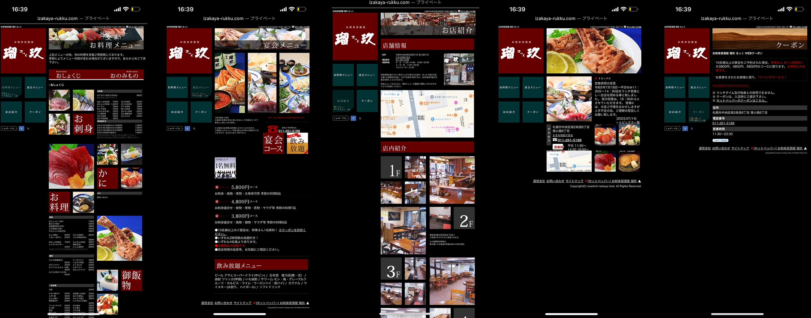
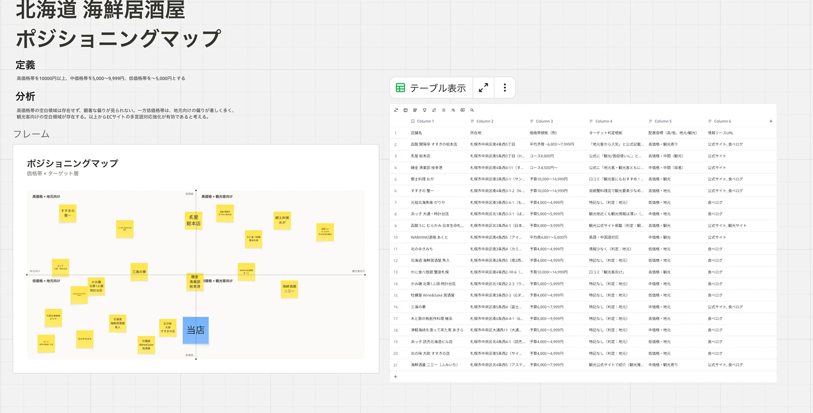
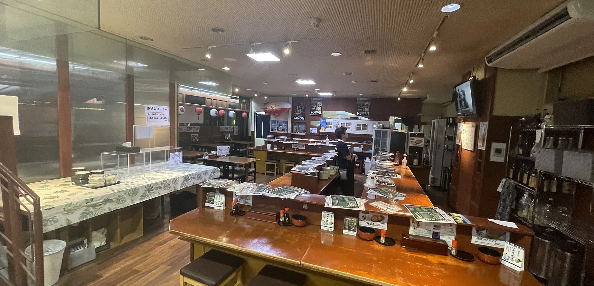
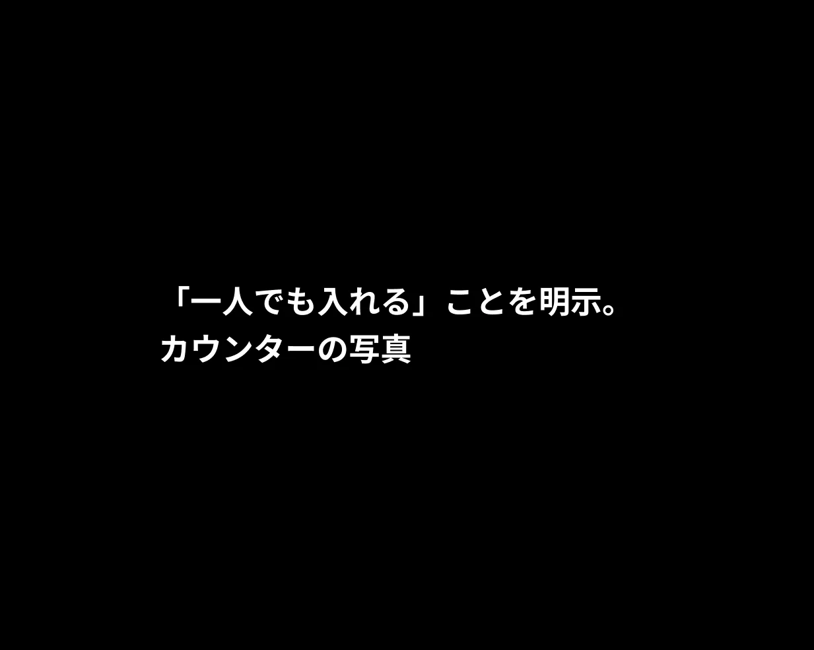
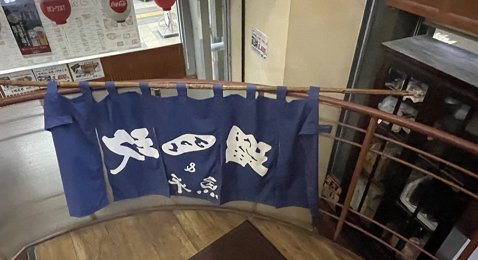
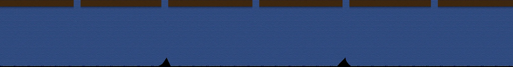
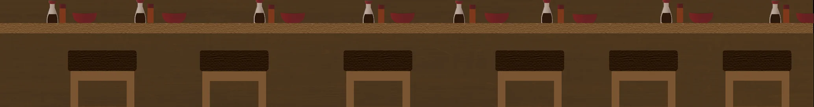
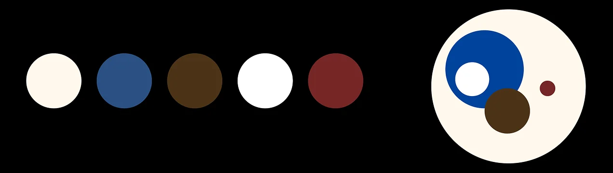
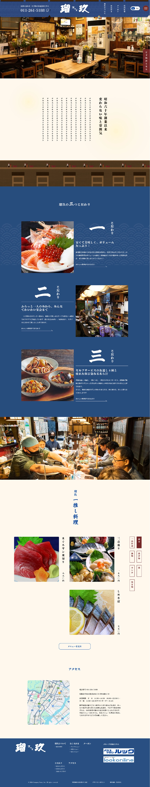

居酒屋瑠玖リニューアルサイト
- #クライアントワーク
- #Webデザイン
私が、働いているアルバイト先のWebサイトをリニューアルしています。
デザインの刷新だけでなく、現状のサイトの課題を洗い出し、リニューアルをする事の効果を分析した上で、制作しています
使っているソフト
Figma
Illustrator
miro
制作期間
製作中
メンバー
デザイナー
プログラマー
担当した役割
デザイナー
Background
Ep. 1
アルバイトとして働き、リニューアル前のWebサイトでは、店の良さが伝わらないと考えました。
アルバイトとして半年働いて、お店の昔ながらの雰囲気の良さや店員とお客さんの距離の近さ、ボリュームたっぷりの料理を見て、お客様に愛されたとても良い居酒屋だと思いました。しかし、Webサイトを見て見ると、数年前から更新していない良さが伝わっていない物でした。だから、お店の雰囲気や良さを伝えられるサイトを作りたい考えました。
Ep. 2
店長に相談してダメだったので、社長に直談判しに行きました。
リニューアルをしたいと思った次の日に店長に相談したところ、「学生には任せられない」と言われて断られました。現状のサイトのままリニューアルができないことを考えるととても悔しく思い、事務所にいる社長にアポイントを取り、直談判をしに行きました。
Ep. 3
単にデザインを変える以外に、リニューアルするメリットを求められました。
社長に自分の熱量を話した時に、現状のサイトでは困っていなく、リニューアルするメリットを教えて欲しいと言われたので、後日メンバーと共にサイトをリニューアルするメリットを考えました。
Ep. 4
リニューアル提案の際に、「課題」「効果」「具体的な方法」の３つに分けて説明しました。
課題
1. スマホに対応していない

現在のサイトパソコン向けに作られており、スマホで見ると文字が小さく読みづらい状態でした。
飲食店を探す際に、多くの人はスマホを使用しているので、文字が小さく読みにくいサイトだと、閲覧者が心理的負担を感じた瞬間に離脱してしまう可能性があると考えました。
2. 予約までの導線が悪い
お客様がサイトに来てから予約するまでに、どこを押せばいいのか分かりにくい状態です。
「行きたい」と思ってくれたお客様を、迷わせずに予約まで運ぶことができていないと感じました。
3. 「瑠玖＆魚平らしさ」が伝わっていない
カウンター中心で一人でも入りやすいこと、ホッケフライやニシンの姿盛りといった名物、あら汁飲み放題、店員さんとの距離の近さ。
こうした実際に足を運んだ人だけが知っている魅力が、サイトからはほとんど伝わっていないと考えました。現状、お店の評判は口コミに頼っている状態で、公式サイトからのブランド発信ができていません。
4. 実際のメニューと違う写真が載っている
現在提供していない料理の写真が掲載されています。
これは来店後の「思っていたのと違う」というミスマッチにつながり、お客様の満足度を下げる原因になると思いました。
5. 外国人向けの多言語対応していない
海鮮居酒屋 瑠玖＆魚平 様には多くの外国人観光客がいらっしゃいますが、現状のサイトは日本語以外に対応していません。
効果
1. お客様目線での効果
予約・来店の動線を整備
予約ボタンを目立たせる、店舗の場所を分かりやすくすることで、途中で離脱するお客様を減らす。
スマホ対応
見やすさが向上し、あわせてSEOの評価も上がる。
ブランドを明確に伝える
来店前から魅力が伝わり、来店後のミスマッチが減る。
公式からの情報発信
口コミに頼らないブランド発信ができる。
2. 運営目線での効果
管理ツール・サーバーの見直し
セキュリティが向上し、更新作業も簡単になる。
ネット集客を見直す機会
サイト運営の目的と方法が明確になる。
3. 実際にサイトリニューアルをしたサイトの効果を3つ紹介
事例1：老舗蕎麦「久良三」（名古屋市中区錦）
https://www.heiketyaya.com/課題
改装で2階席を増やしたのに予約が入らない。「老舗蕎麦屋」のイメージが強すぎて、お酒・接待・宴会で使える店だと認識されていなかった
施策
外から見えない2階席や店内の雰囲気を高品質な写真で可視化。「蕎麦前（そばまえ）」を楽しむ店へイメージをシフトし、一品料理・日本酒・コースを前面に出して宴会・接待の予約導線を整備
成果
公開から約3ヶ月で売上が昨対比1.5倍。接待・宴会予約が増え、酒の注文数も増えて客単価が上昇
学び
新しい設備を作っても「伝わらなければ」売上にならない
事例2：ふぐ料理・日本料理「平家茶屋」（山口県下関市）
https://www.heiketyaya.com/課題
以前のHPは名刺代わり程度のクオリティで、店の質に見合う情報を伝えきれていなかった
施策
高品質なデザインと写真、練られたページ構成で魅力を最大限発信。特に海沿いのロケーションを活かしたトップページ写真を強化
成果
売上が月により前年対比120%以上。問い合わせ数・ネット予約数も増加し、オーナーが高い費用対効果を実感
学び
強みを写真で正しく見せると、そのまま予約と売上に直結する
事例3：居酒屋「炭火とレモン あがりこぐち。」＋立ち飲み「ヨカル」（広島県福山市）
https://www.agarikoguchi.com/課題
新店「ヨカル」が1年以上経っても集客に苦戦。レジ・予約台帳を含めて大手グルメサイトにシステム全体を依存し、広告費をかけ続けないと集客が安定しないジレンマ
施策
2店の利用シーンをWeb上で明確に分離。エリアドミナント戦略で駅前の検索を面で制圧。満席時にもう一方の店へ誘導する導線もWeb上で強化
成果
SEO・MEOの相乗効果でWeb経由予約が急増、売上昨対比最大200%。グルメサイト広告費を削減する経営判断が可能
学び
媒体依存から、自社サイトという「資産」への移行例
具体的な方法
1. ターゲットについて
ポジショニングマップ
事前のリングで競合を意識している飲食店はないということだったので、ポジショニイングマップを使用し、現在の居酒屋ルック様の立ち位置を確認しました。

メインターゲット
一人客・出張客
私のアルバイト経験での知見、お客様からの声、そして事務所の方からの客観的なお話から、一人でも入店できる点に非常に満足されているお客様が多いことが分かり、一人客をターゲットとしました。またお客様の声から、道外からの出張で来店されたお客様が同僚や友人に紹介し、数珠繋ぎでお店を紹介してくれている状況を知り、「言葉だけではなく、サイトを通じて自分で良さを感じてほしい」と考え、出張客もターゲットとしました。
根拠となる強み
カウンター席が多い／一人でも来やすい／リーズナブル

サイトで打ち出すこと

サブターゲット
宴会・団体
フロアが４階まであり、宴会最大100名以上の貸切で行うことができ、他の居酒屋にはない特徴であると考えました。
外国人観光客
狸小路はインバウンドの影響によりたくさんの外国人観光客が来る状況です。この好機を活かしてインバウンド顧客による高い客単価を確保しながらも、事業の土台である既存の常連客離れを防ぐ施策を並行して行いたいと考えています。
地元のリピーター
常連客により店舗のブランド価値が安定しているからこそ、今来ている常連客にさらに満足してもらいと考えました。
2. 大事な考え方の提示
「安い・早い」で勝負しない
予約時は、価格やクーポンで比較されるため、グルメサイト上で戦うと価格競争になり、利益が削られると考えました。
自社サイトでは、お店の世界観・店主のストーリー・こだわりを伝え、「安いから行く」ではなく「瑠玖＆魚平だから行く」というお客様が増やし、広告費に頼らない集客を考えています。
3. 3つの予約サイト窓口を1つに統合するご提案
旧サイトでは、「昔作られた自社サイト」、「ぐるなびのホームページ」、「ホットペッパーのホームページ」の３つのホームページがありました。店舗を知ることができる窓口が複数あることにより、「SEOの分散」や「情報の食い違い」、「データが取れない」の３つが起こってしまうと考えました。そこで、これらの課題を解消し、Webサイトを一つに集約して一元管理することを考えました。窓口を一本化することでSEO効果を高めて検索で見つけてもらいやすくし、常に最新で正確な情報を発信できる状態を作ります。また、サイト閲覧者のデータを正確に取得・分析できる環境を整えることで、お客様がどのような情報に魅力を感じているかを把握し、より伝わるサイトへと改善していくことを提案しました。
Design
デザインコンセプト
昔ながらの温もりがある居酒屋瑠玖
コンセプトの軸は「あのるっく」を表現すること。狸小路ブランドと結びついた存在であり、「狸小路6丁目のるっく」として、インバウンドをはじめとする時代の変化を乗り越えて歩んできた店という文脈を打ち出す。
ターゲットやコンセプトに合わせたデザインにするために。
1. ルックの世界観を視覚的に表現。
コンセプトの軸は「あのるっく」を表現すること。狸小路ブランドと結びついた存在であり、「狸小路6丁目のるっく」として、インバウンドをはじめとする時代の変化を乗り越えて歩んできた店という文脈を打ち出す。
暖簾のヘッダー
実際の写真

イラスト

カウンター
実際の写真
イラスト

2. 澄んだカラー設計
- ベースカラー（ベージュ） 店内の賑やかさや人情味あふれる温かみを表現しつつ、老舗店のような趣を演出するために、ベージュを採用しました。
- メインカラー（ネイビー）： 新鮮な海鮮料理との親和性を高めるため、深みのあるネイビーをキーカラーに設定しています。
- トーン（くすみ色）： 全体的に彩度を抑えた「くすみカラー」に統一することで、レトロで落ち着いた居酒屋ルックの雰囲気を表現しています。

3. 太すぎず細すぎないフォント
老舗店としての歴史や確かな品質を伝えるため、格調高い「明朝体」をベースとしながら、店の重厚感の印象を与えすぎないために、太すぎないウエイトを採用しました。
実際のデザイン（現在制作途中）
